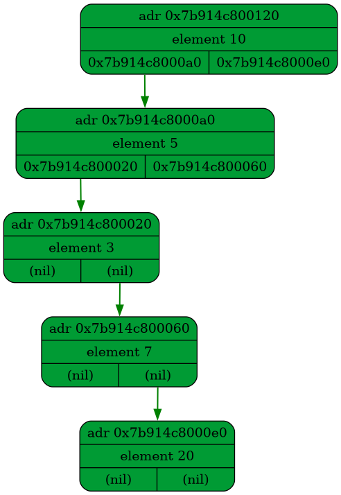
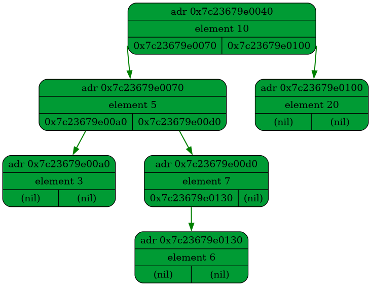
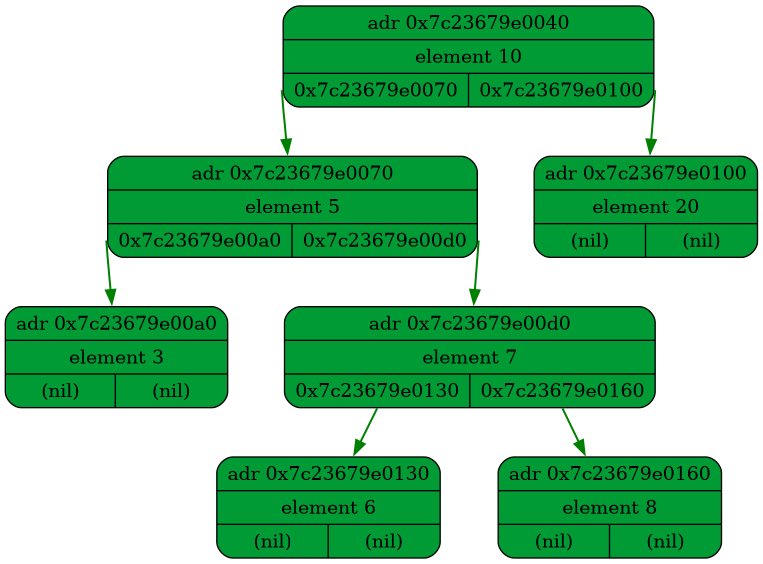
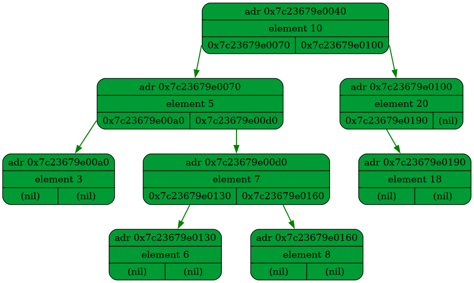
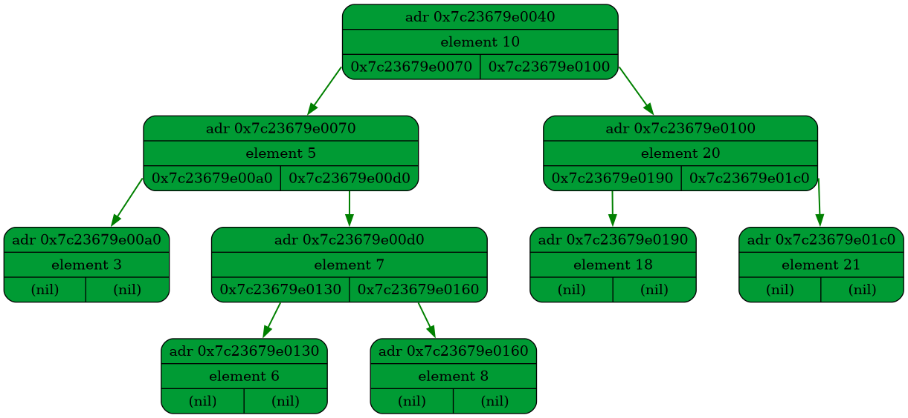
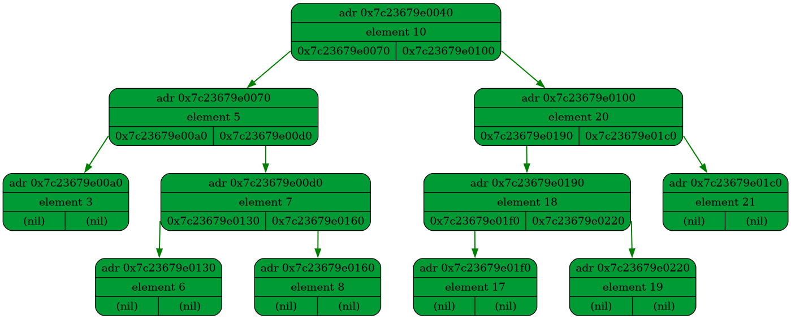

<h1>DUMP FROM src/main.cpp:23</h1>

<h1>DUMP FROM src/main.cpp:27</h1>

<h1>DUMP FROM src/main.cpp:30</h1>

<h1>DUMP FROM src/main.cpp:33</h1>

<h1>DUMP FROM src/main.cpp:36</h1>

<h1>DUMP FROM src/main.cpp:40</h1>

